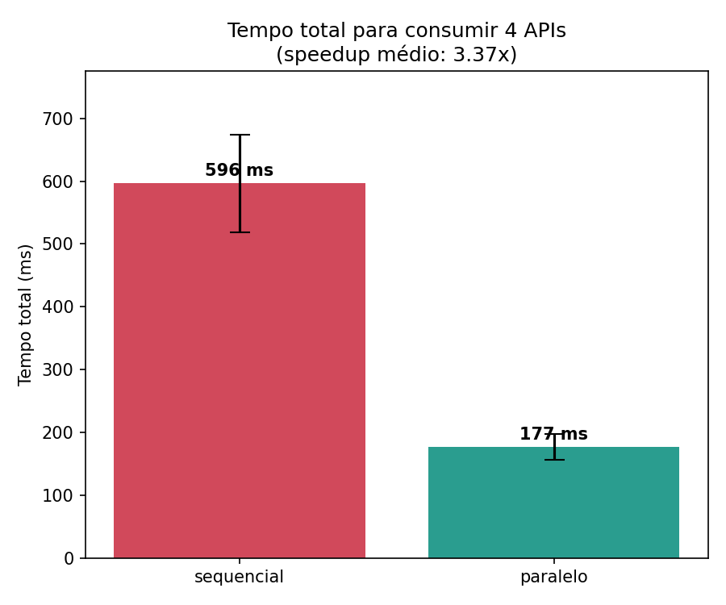
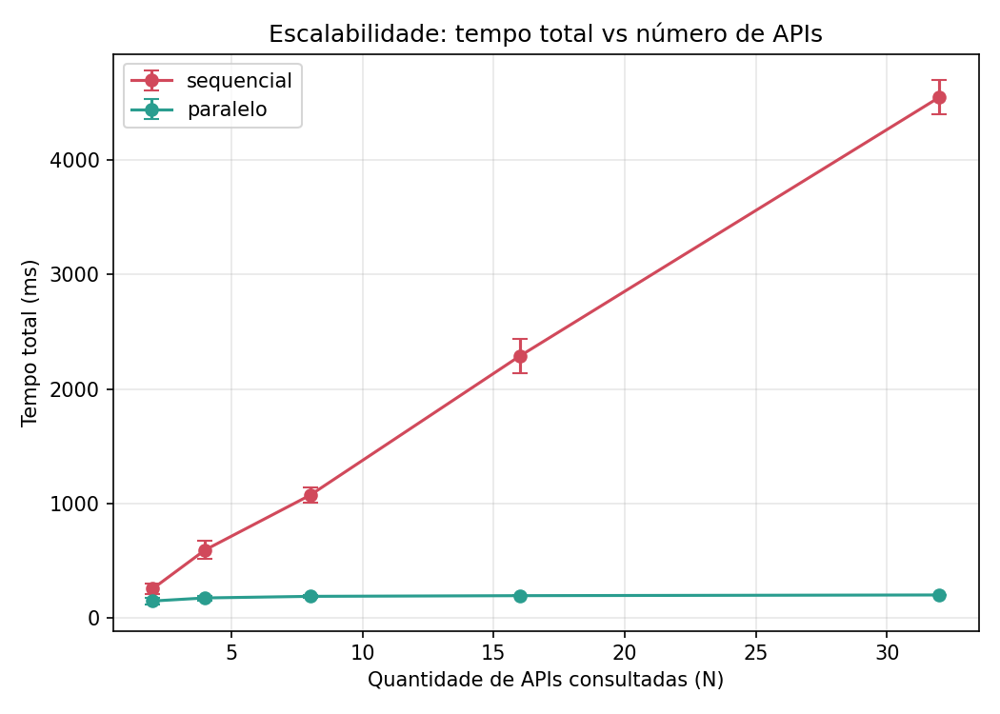

Em arquiteturas de microsserviços, a extração de dados dispersos em múltiplas APIs gera latência cumulativa, custos de rede e sobrecarga nos bancos de dados de persistência. O GoAgg resolve esse gargalo atuando como um motor de consolidação e agregação de dados diretamente em memória.
Ao centralizar o processamento e a execução das regras de negócio na memória do runtime, o sistema elimina consultas redundantes e o acoplamento a ferramentas externas de análise, entregando relatórios consolidados sob demanda de forma escalável.
O processamento de dados do motor é estruturado em um pipeline linear de 5 etapas para consolidar as informações em memória:
JData, desacoplando o motor analítico de variações nas fontes.A escolha das tecnologias de base reflete o foco do projeto em previsibilidade, eficiência de consumo de hardware e escalabilidade linear sob concorrência. Abaixo estão detalhados os fundamentos arquiteturais e os trade-offs avaliados para o desenvolvimento do motor.
Embora ambas as linguagens ofereçam alto desempenho, elas abordam a eficiência de maneiras distintas. A linguagem C fornece controle manual sobre o hardware através de gerenciamento de memória (malloc/free) e diretivas estritas de compilação, permitindo otimizações em nível de registradores, com custo em complexidade operacional.
Go gerencia sistemas concorrentes por meio de uma camada de abstração com Garbage Collector (GC) otimizado para pausas de baixa latência. Isso entrega velocidade de execução próxima à de C, aumentando a produtividade no desenvolvimento e oferecendo segurança contra corrupção de memória.
| Critério Técnico | Linguagem C (Abordagem de Baixo Nível) | Linguagem Go (Abordagem GoAgg) |
|---|---|---|
| Gerenciamento de Memória | Manual (malloc/free): Risco de vazamentos de memória (memory leaks) se não gerenciado de forma detalhada. | Automático (Garbage Collector): Segurança nativa contra corrupção, com pausas sub-milissegundo. |
| Concorrência e Escala | Modelo 1:1 (Threads do SO): Mapeamento direto no kernel. Cada thread consome de 1MB a 8MB de alocação de stack e exige gerenciamento complexo de travas (mutexes). | Modelo M:N (Multiplexado): O Go Runtime gerencia milhares de Goroutines leves (~2KB de stack inicial) sobre poucas threads do SO. |
| Garantia de Imutabilidade | Estrita (const): O compilador bloqueia modificações na estrutura de dados sem custo adicional em tempo de execução. | Via Código (Cópias): A ausência de const exige clonagem manual de estruturas para isolar o fluxo. |
| Velocidade de Entrega | Baixa: Desenvolvimento lento devido à necessidade de implementar estruturas base de forma manual. | Alta: Curva de aprendizado rápida, bom ferramental nativo e foco na lógica da aplicação. |
Para mitigar o overhead do Garbage Collector e otimizar as rotinas analíticas na memória, o tipo estruturado JData é definido e alocado de forma sequencial na memória física.
O comparativo abaixo ilustra o construtor idiomático do GoAgg versus a alocação manual equivalente necessária em C, evidenciando a complexidade de gerenciar a liberação da memória (free) e o mapeamento de ponteiros:
type JData struct {
Source string
Payload map[string]interface{}
CreateAt time.Time
}
func NewJData(source string, raw []byte) *JData {
return &JData{
Source: source,
Payload: parseToMap(raw),
CreateAt: time.Now(),
}
}typedef struct {
char* source;
void* payload; // Mapeamento dinâmico complexo
time_t created_at;
} JData;
JData* new_jdata(const char* src, void* raw) {
JData* d = (JData*)malloc(sizeof(JData));
d->source = strdup(src); // Duplica string na memória
d->payload = parse_map(raw);
d->created_at = time(NULL);
return d; // Requer free(d) posterior
}
A ingestão paralela de microsserviços opera sobre o modelo de concorrência CSP (Communicating Sequential Processes). Ao usar Goroutines e Channels, as requisições de rede executam de forma isolada sem a necessidade de travas manuais complexas no código de aplicação.
Veja o contraste entre a elegância das primitivas de Go e a necessidade de controle explícito de concorrência com travas (mutexes) em C:
// Channel gerencia a sincronização segura
results := make(chan *JData, 100)
go func(endpoint string) {
data, err := fetch(endpoint)
if err != nil { return }
results <- NewJData(endpoint, data)
}(apiURL)// Requer gerenciamento explícito de lock
pthread_mutex_t lock = PTHREAD_MUTEX_INITIALIZER;
void* fetch_thread(void* arg) {
JData* d = fetch((char*)arg);
pthread_mutex_lock(&lock);
push_to_shared_queue(d); // Seção crítica
pthread_mutex_unlock(&lock);
return NULL;
}
Durante o desenvolvimento, a equipe tratou as limitações de design do Go. A ausência de restrições de imutabilidade em nível de compilador gerou desafios de integridade. Para isolar o estado de alterações acidentais, implementamos cópias superficiais (shallow copies) na esteira de processamento.
Veja o contraste entre a estratégia de clonagem em memória do Go (com custo de alocação) e a garantia estrita e gratuita em tempo de compilação fornecida pelo modificador const em C:
// Clone cria uma cópia rasa e aloca novo mapa
func (j *JData) Clone() *JData {
copiedPayload := make(map[string]interface{})
for k, v := range j.Payload {
copiedPayload[k] = v
}
return &JData{
Source: j.Source,
Payload: copiedPayload,
CreateAt: j.CreateAt,
}
}// O compilador impede a modificação diretamente
void process_data(const JData* const data) {
// Erro de compilação se tentar alterar o payload:
// data->payload = NULL;
analyze(data); // Seguro e sem custo de clonagem
}Como o motor processa predominantemente tipos primitivos nesta entrega, o impacto da clonagem manual em Go é irrelevante frente ao ganho em segurança de memória. Contudo, a evolução para estruturas aninhadas no futuro exigirá atenção para evitar efeitos colaterais e overhead de alocação de memória no heap.
O balanço final valida o ecossistema escolhido. A simplicidade na orquestração de rotinas concorrentes e a proteção do runtime contra corrupção de memória compensaram as restrições de baixo nível, resultando em um motor estável preparado para escala horizontal sustentável.
Para avaliar a eficiência do motor sob concorrência, submetemos a arquitetura do GoAgg a testes de estresse contra um modelo de processamento sequencial tradicional. O experimento mediu o comportamento do sistema integrando de 2 a 32 microsserviços simulados de forma síncrona e assíncrona.
Os dados estatísticos coletados demonstram o comportamento do modelo de concorrência implementado em Go. Enquanto a abordagem sequencial tradicional sofre uma degradação linear de performance a cada nova API adicionada, o GoAgg mantém a latência de consolidação estável, limitada pelo tempo de resposta do microsserviço mais lento.
| Volumetria (Múltiplas APIs) | Modelo Tradicional (Sequencial) | Motor GoAgg (Paralelo) | Ganho de Eficiência (Média) |
|---|---|---|---|
| 2 APIs Integradas | 258.02 ms | 150.55 ms | 1.7x mais rápido |
| 4 APIs Integradas | 596.31 ms | 177.20 ms | 3.3x mais rápido |
| 8 APIs Integradas | 1073.03 ms | 191.12 ms | 5.6x mais rápido |
| 16 APIs Integradas | 2286.44 ms | 197.10 ms | 11.5x mais rápido |
| 32 APIs Integradas | 4542.47 ms | 203.19 ms | 22.4x mais rápido |
Com 32 conexões simultâneas de microsserviços, o modelo sequencial atinge a marca de 4.5 segundos por requisição. O GoAgg executa o mesmo cenário em 203 milissegundos, representando uma resposta 22 vezes superior em velocidade.

Figura 1: Distribuição de latência e desvio padrão entre os modos de processamento.

Figura 2: Curva de escalabilidade do motor GoAgg vs. crescimento linear do modelo sequencial.
A implementação do GoAgg comprova como a adoção de primitivas nativas de concorrência altera drasticamente a viabilidade de escalabilidade horizontal do ecossistema:
O processamento concorrente estabilizou a latência na casa dos 200 ms para até 32 APIs, eliminando gargalos de acúmulo de tempo síncrono.
Obtivemos até 22.4x mais velocidade nas cargas de estresse, reduzindo drasticamente o tempo de CPU ociosa à espera de I/O de rede.
Garantimos o isolamento de dados via cópias controladas (shallow copies), blindando o sistema contra mutações inesperadas em concorrência.
A validação do GoAgg confirma a eficácia do processamento concorrente aplicado à agregação de dados. Ao neutralizar o acúmulo de tempo de resposta típico de requisições sequenciais, o motor atingiu seu objetivo de engenharia, entregando resultados com latência previsível limitada pelo tempo de resposta do microsserviço mais lento, mesmo com o aumento no volume de conexões.
O ecossistema Go atendeu os requisitos do projeto através de suas primitivas de concorrência multiplexada e isolamento seguro de memória. O balanço do projeto demonstra que as rotinas de sincronização e o uso de cópias superficiais (shallow copies) para mitigar a ausência de imutabilidade nativa foram escolhas justificadas, resultando em um sistema eficiente no consumo de hardware e com estabilidade operacional.